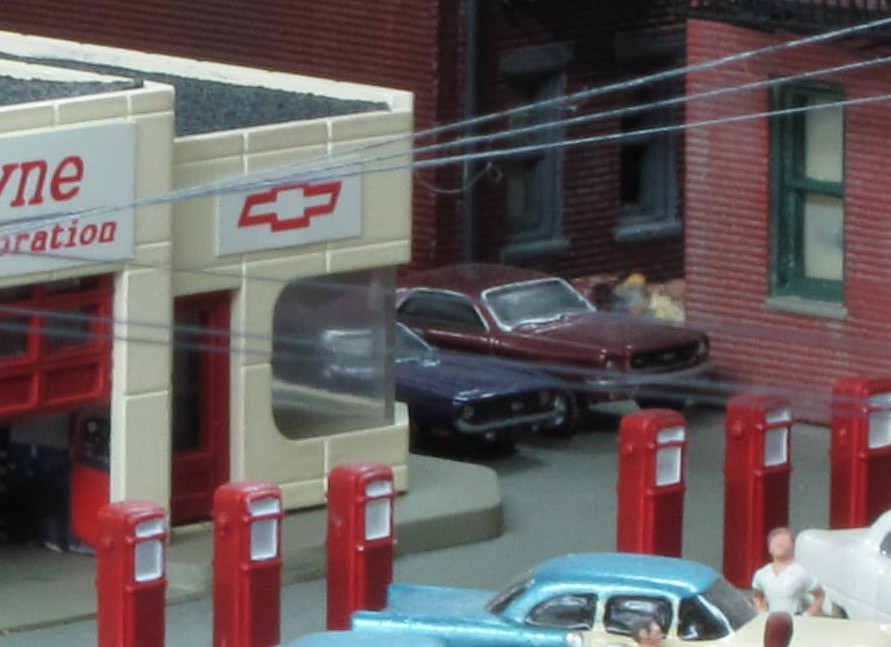

Personalized Scenes That Tell A Story

When we think of a model railroad, we often think of prototypes, equipment, modeling locales, eras, and scenery that fits the region modeled. However, when we include scenes and details on our model railroads that make our layouts more personal or perhaps tell a story, it creates a new dimension that can be appreciated by modelers and non-modelers alike. I have included a few such scenes on my model railroad. While the individual scenes or details provide visual interest, it’s the story behind the scene that can really bring a model railroad to life.
“Fast Layne” is a tribute to a good high school friend, who became terminally ill in 2009 and passed away late in 2010. We were “gear heads” in high school and were obsessed with muscle cars. We often cruised our hometown on weekends, he in his 1969 Camaro, and me in my 1966 Mustang. He loved Chevy muscle cars, and even into adulthood, he would regularly find classics to restore and resell. Those memories were the inspiration behind this scene and a way to memorialize my friend.
Creating a restoration shop that incorporated his name as a play on words, “Fast Layne” seemed obvious. Classic Chevy muscle cars cover the lot and occupy the service bays. Various “parts cars” are found in back—a detail that was inspired by a summer we spent working on a 1969 Cutlass together that included cannibalizing a “parts car” for salvageable parts. Every car in the scene is a Chevy with one exception. On the side of the building are two special cars—his 1969 Camaro, and my 1966 Mustang, parked side-by- side.